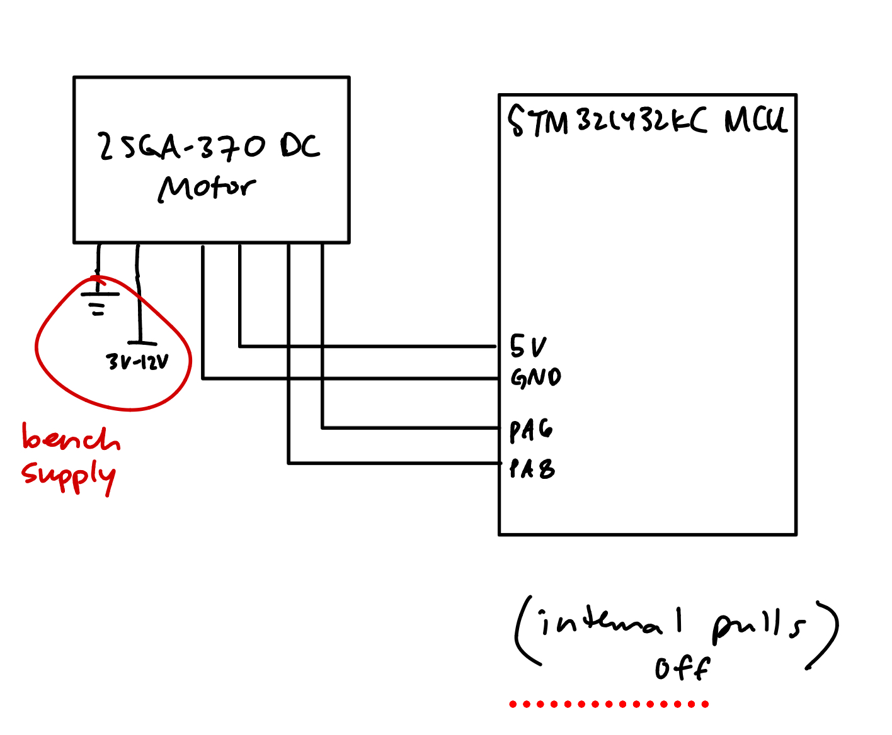
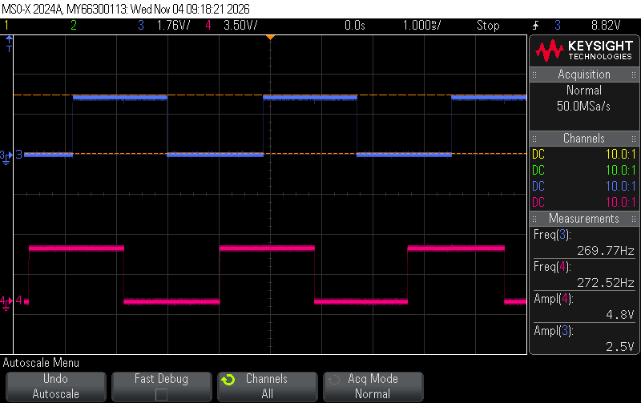
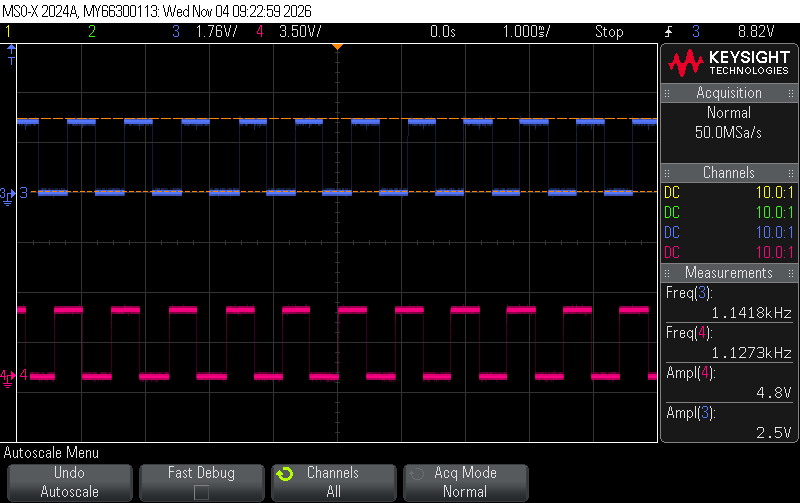

E155 Lab 5: Interrupts
1 Introduction
In this lab I used the STM32L432KC to measure the speed and direction of a 25GA-370 DC motor using its quadrature encoder. The MCU gets an interrupt on every edge of encoder channels A and B and once a second prints the speed in rev/s and the direction (CW or CCW) to the SEGGER debug terminal.
2 Design and Testing Methodology
2.1 Overall Design
main.c/main.h: setup, then every 1 s calculates and prints the speedencoder.c/encoder.h: pin, EXTI and timer setup, and the interrupt handlerlib/: course GPIO, RCC and FLASH drivers (80 MHz clock)
The interrupt handler only updates position (signed step count) and edgeTime (TIM2 time of the last edge). main does all the math and printing. The shared variables are volatile since the interrupt can change them at any time.
2.2 Interrupts
PA6 (A) and PA8 (B) are mapped to EXTI6 and EXTI8 through SYSCFG->EXTICR, set to trigger on both rising and falling edges, and enabled in the NVIC through EXTI9_5_IRQn. The handler clears the pending bits in EXTI->PR1, grabs the time from TIM2, reads A and B in one read of GPIOA->IDR, and adds the step to position.
2.3 Direction
A and B are 90° out of phase, so going CW the state goes AB = 00 → 10 → 11 → 01 → 00 and CCW is the reverse. Each interrupt compares the old and new AB with a lookup table:
| old ↓ / new → | 00 | 01 | 10 | 11 |
|---|---|---|---|---|
| 00 | 0 | -1 | +1 | 0 |
| 01 | +1 | 0 | 0 | -1 |
| 10 | -1 | 0 | 0 | +1 |
| 11 | 0 | +1 | -1 | 0 |
+1 is a CW step and -1 is CCW, so the direction is just the sign of the change in position.
2.4 Speed
TIM2 runs at 1 MHz (PSC = 79), so each count is 1 µs. Once a second main copies position and edgeTime with interrupts briefly off, then:
speed (rev/s) = Δposition / (Δt × 1632)
where Δt is the time between the last edge last update and the last edge this update. If there are no edges for 3 s it prints 0 (stopped).
2.5 Testing
I compared the printed speed to the encoder frequency on the scope at a few supply voltages. The scope shows pulses per second on one channel, so the true speed is f / 408.
3 Technical Documentation
3.1 Code
main.c
// main.c
// Lab 5: measures motor speed and direction with a quadrature encoder, prints once a second
// Cheyenne Trujillo, 2026-11-04
#include "main.h"
#include <stdio.h>
#define URPS_PER_LSB 100 // print to 0.0001 rev/s
#define DECIMAL_SCALE 10000
// (no float printf, so it splits the number into whole part and 4 decimals by hand)
static void printSpeed(int32_t urps) {
// sign and size separately (+/- then the positive number)
char sign = (urps < 0) ? '-' : '+';
uint32_t mag = (urps < 0) ? (uint32_t)(-urps) : (uint32_t)urps;
// micro-rev/s -> units of 0.0001 rev/s, rounded
mag = (mag + URPS_PER_LSB / 2) / URPS_PER_LSB;
// positive = CW, negative = CCW, 0 = stopped
const char *dir = (urps > 0) ? "CW" : (urps < 0) ? "CCW" : "stopped";
// whole part . 4 decimal digits
printf("speed: %c%lu.%04lu rev/s (%s)\n",
sign, (unsigned long)(mag / DECIMAL_SCALE), (unsigned long)(mag % DECIMAL_SCALE), dir);
}
// prints micro-rev/s as "+2.4571"
int main(void) {
configureFlash();
configureClock(); // 80 MHz from the PLL
initEncoder(); // pins, interrupts and the 1 MHz timer (TIM2)
// ref = the encoder reading from the last time we calculated a speed
// each second we compare the new reading to ref to see how far it moved
encoder_snapshot_t ref = encoderSnapshot();
uint32_t lastReport = micros(); // when we last printed
uint32_t lastSnapTime = lastReport; // when we last took a snapshot
int32_t speed_urps = 0; // speed in micro-rev/s (+ = CW, - = CCW)
int stopped = 1; // start out assuming the motor isn't moving
printf("%d edges per output rev (gear %d:1)\n", EDGES_PER_REV, GEAR_RATIO);
while (1) {
// wait until 1 s has passed
uint32_t now = micros();
if ((uint32_t)(now - lastReport) < REPORT_PERIOD_US) continue;
lastReport += REPORT_PERIOD_US; // += (not = now) so it doesn't slowly drift
// grab the latest encoder data
encoder_snapshot_t s = encoderSnapshot();
uint32_t prevSnapTime = lastSnapTime;
lastSnapTime = now;
int32_t dEdges = s.position - ref.position; // how many steps since last time
// calculate the speed
if (dEdges != 0) {
if (stopped) {
// just started moving
speed_urps = velocityMicroRevPerSec(dEdges, s.edgeTime - prevSnapTime, EDGES_PER_REV);
stopped = 0;
} else {
// normal case
speed_urps = velocityMicroRevPerSec(dEdges, s.edgeTime - ref.edgeTime, EDGES_PER_REV);
}
ref = s; // this reading becomes the starting point for next time
} else if ((uint32_t)(now - ref.edgeTime) > STOP_TIMEOUT_US) {
// no edges for over 3 s: call it stopped
speed_urps = 0;
stopped = 1;
ref = s;
}
// (no edges but less than 3 s: just keep showing the last speed)
printSpeed(speed_urps);
}
}main.h
// main.h
// Lab 5: quadrature encoder motor speed
// Cheyenne Trujillo, 2026-11-04
#ifndef MAIN_H
#define MAIN_H
#include "STM32L432KC.h"
#include "encoder.h"
// 25GA-370 motor, 34:1 gearbox
#define GEAR_RATIO 34
#define PULSES_PER_MOTOR_REV 12 // per channel, motor shaft
// count every edge of A and B
#define EDGES_PER_REV (4 * PULSES_PER_MOTOR_REV * GEAR_RATIO)
// print once a second
#define REPORT_PERIOD_US 1000000u
// no edge for this long = stopped
#define STOP_TIMEOUT_US 3000000u
#endif // MAIN_Hencoder.c
// encoder.c
// Quadrature encoder driver: EXTI on every edge of A and B, timestamped with TIM2
// Cheyenne Trujillo, 2026-11-04
#include "encoder.h"
// edges/us -> micro-rev/s
#define URPS_SCALE 1000000000000LL
// shared with the ISR
static volatile int32_t position = 0;
static volatile uint32_t edgeTime = 0;
static volatile uint8_t lastAB = 0;
// step for each (old AB, new AB): +1 = CW, -1 = CCW, 0 = no move
static const int8_t QUAD_TABLE[16] = {
// new: 00 01 10 11 old
0, -1, +1, 0, // 00
+1, 0, 0, -1, // 01
-1, 0, 0, +1, // 10
0, +1, -1, 0 // 11
};
// speed in micro-rev/s
int32_t velocityMicroRevPerSec(int32_t dEdges, uint32_t dTimeUs, uint32_t edgesPerRev) {
if (dTimeUs == 0 || edgesPerRev == 0) return 0;
int64_t num = (int64_t)dEdges * URPS_SCALE;
int64_t den = (int64_t)dTimeUs * (int64_t)edgesPerRev;
// round to nearest
if (num >= 0) return (int32_t)((num + den / 2) / den);
else return (int32_t)((num - den / 2) / den);
}
static uint8_t readAB(void) {
uint32_t idr = GPIOA->IDR; // read both pins at once
return (uint8_t)((((idr >> ENCODER_A_NUM) & 1) << 1) | ((idr >> ENCODER_B_NUM) & 1));
}
uint32_t micros(void) {
return TIMESTAMP_TIM->CNT;
}
static void initTimestampTimer(void) {
RCC->APB1ENR1 |= RCC_APB1ENR1_TIM2EN;
TIMESTAMP_TIM->PSC = (SystemCoreClock / TIMESTAMP_HZ) - 1; // 80 MHz / 80 = 1 MHz
TIMESTAMP_TIM->ARR = 0xFFFFFFFF; // use all 32 bits
TIMESTAMP_TIM->EGR = TIM_EGR_UG; // load the prescaler now
TIMESTAMP_TIM->SR = 0;
TIMESTAMP_TIM->CNT = 0;
TIMESTAMP_TIM->CR1 |= TIM_CR1_CEN;
}
void initEncoder(void) {
gpioEnable(GPIO_PORT_A);
pinMode(ENCODER_A, GPIO_INPUT);
pinMode(ENCODER_B, GPIO_INPUT);
// no pull resistors since the encoder outputs 5 V
GPIOA->PUPDR &= ~(GPIO_PUPDR_PUPD6 | GPIO_PUPDR_PUPD8);
initTimestampTimer();
// route PA6 and PA8 to EXTI6 and EXTI8
RCC->APB2ENR |= RCC_APB2ENR_SYSCFGEN;
SYSCFG->EXTICR[1] &= ~SYSCFG_EXTICR2_EXTI6;
SYSCFG->EXTICR[2] &= ~SYSCFG_EXTICR3_EXTI8;
// trigger on both edges
uint32_t mask = (1u << ENCODER_A_NUM) | (1u << ENCODER_B_NUM);
EXTI->RTSR1 |= mask;
EXTI->FTSR1 |= mask;
EXTI->PR1 = mask; // clear pending
EXTI->IMR1 |= mask;
lastAB = readAB();
// EXTI lines 5-9 share one interrupt
NVIC_EnableIRQ(EXTI9_5_IRQn);
__enable_irq();
}
// copy the ISR's variables with interrupts off
encoder_snapshot_t encoderSnapshot(void) {
encoder_snapshot_t s;
__disable_irq();
s.position = position;
s.edgeTime = edgeTime;
__enable_irq();
return s;
}
// runs on every edge of A or B
void EXTI9_5_IRQHandler(void) {
uint32_t mask = (1u << ENCODER_A_NUM) | (1u << ENCODER_B_NUM);
uint32_t pending = EXTI->PR1 & mask; // clear PR1 by writing 1s to A and B
if (!pending) return;
// clear before reading the pins so a new edge re-triggers the interrupt
EXTI->PR1 = pending;
uint32_t now = TIMESTAMP_TIM->CNT;
uint8_t ab = readAB();
int8_t step = QUAD_TABLE[(lastAB << 2) | ab];
if (step != 0) {
position += step;
edgeTime = now;
}
lastAB = ab;
}encoder.h
// encoder.h
// Quadrature encoder driver
// Cheyenne Trujillo, 2026-11-04
#ifndef ENCODER_H
#define ENCODER_H
#include <stdint.h>
#include "STM32L432KC.h"
// encoder pins (5 V tolerant)
#define ENCODER_A PA6
#define ENCODER_B PA8
#define ENCODER_A_NUM 6
#define ENCODER_B_NUM 8
// 1 MHz timer for edge timestamps
#define TIMESTAMP_TIM TIM2
#define TIMESTAMP_HZ 1000000u
typedef struct {
int32_t position; // signed edge count (+ = CW, - = CCW)
uint32_t edgeTime; // TIM2 time of the most recent edge (us)
} encoder_snapshot_t;
void initEncoder(void);
// counts microseconds since the timer started
uint32_t micros(void);
// makes sure interrupts don't change the values while copying
encoder_snapshot_t encoderSnapshot(void);
int32_t velocityMicroRevPerSec(int32_t dEdges, uint32_t dTimeUs, uint32_t edgesPerRev); // calc speed in micro-rev/s
#endif // ENCODER_H3.2 Pin Assignments
| Signal | MCU pin | Notes |
|---|---|---|
| Encoder A | PA6 | 5 V tolerant, EXTI6 |
| Encoder B | PA8 | 5 V tolerant, EXTI8 |
| Encoder VCC | 5 V | |
| Encoder GND | GND | |
| Motor M+ / M- | 0-12 V bench supply | not connected to the MCU |
The encoder outputs 5 V, so A and B go to 5 V tolerant pins (STM32L432KC datasheet Table 14) with the internal pull-up/pull-down turned off.
3.3 Hardware Schematic

The MCU is on the E155 dev board, so I only drew what I added. See the E155 Development Board Schematic for the rest.
3.4 Calculations
Edges per rev: 12 pulses/channel/motor rev × 34:1 gearbox = 408 pulses per output rev per channel. Counting both edges of both channels: 4 × 408 = 1632 edges/rev.
Example speed: 3,400 edges over 1.0005 s → 3,400 / (1.0005 × 1632) = 2.0823 rev/s.
Update rate: main prints every 1,000,000 TIM2 counts = 1 s → 1 Hz.
Resolution:
- Position: 1/1632 rev = 0.22°
- Timer: 1 µs
- Printed speed: 0.0001 rev/s
4 Results
4.1 Speed Accuracy
| Scope capture | Scope freq (Hz) | True speed (rev/s) | Printed speed (rev/s) | Error |
|---|---|---|---|---|
| scope_70 | 271.1 | 0.6646 | 0.6636 | -0.14% |
| scope_69 | 556.4 | 1.3637 | 1.3723 | +0.63% |
| scope_71 | 845.5 | 2.0724 | 2.0860 | +0.65% |
| scope_72 | 1134.6 | 2.7808 | 2.8030 | +0.80% |
True speed = scope freq / 408. All readings are within 1% of the true speed.
Scope captures


4.2 Stopped Motor
It prints 0 (stopped) when the motor isn’t spinning (see logs below).
Run 1: speeding up
Lab 5 encoder: 1632 edges per output rev (gear 34:1)
speed: +0.0000 rev/s (stopped)
speed: +0.0000 rev/s (stopped)
speed: +0.0000 rev/s (stopped)
speed: +0.0000 rev/s (stopped)
speed: +0.0000 rev/s (stopped)
speed: +0.4169 rev/s (CW)
speed: +0.6638 rev/s (CW)
speed: +0.6634 rev/s (CW)
speed: +0.6639 rev/s (CW)
speed: +0.6633 rev/s (CW)
speed: +0.6637 rev/s (CW)
speed: +1.2140 rev/s (CW)
speed: +1.3713 rev/s (CW)
speed: +1.3731 rev/s (CW)
speed: +1.3721 rev/s (CW)
speed: +1.3727 rev/s (CW)
speed: +1.5630 rev/s (CW)
speed: +2.0849 rev/s (CW)
speed: +2.0856 rev/s (CW)
speed: +2.0857 rev/s (CW)
speed: +2.0860 rev/s (CW)
speed: +2.0878 rev/s (CW)
speed: +2.2530 rev/s (CW)
speed: +2.8028 rev/s (CW)
speed: +2.8025 rev/s (CW)
speed: +2.8013 rev/s (CW)
speed: +2.8031 rev/s (CW)
speed: +2.8034 rev/s (CW)
speed: +2.8046 rev/s (CW)
speed: +1.8775 rev/s (CW)
speed: +1.8775 rev/s (CW)
speed: +1.8775 rev/s (CW)
speed: +0.0000 rev/s (stopped)
speed: +0.0000 rev/s (stopped)Run 2: slowing down from 1 V to 0.25 V
Lab 5 encoder: 1632 edges per output rev (gear 34:1)
speed: +0.0000 rev/s (stopped)
speed: +0.0000 rev/s (stopped)
speed: +0.0000 rev/s (stopped)
speed: +0.0000 rev/s (stopped)
speed: +0.1634 rev/s (CW)
speed: +0.1971 rev/s (CW)
speed: +0.1965 rev/s (CW)
speed: +0.1960 rev/s (CW)
speed: +0.1958 rev/s (CW)
speed: +0.1956 rev/s (CW)
speed: +0.1175 rev/s (CW)
speed: +0.0755 rev/s (CW)
speed: +0.0760 rev/s (CW)
speed: +0.0758 rev/s (CW)
speed: +0.0754 rev/s (CW)
speed: +0.0760 rev/s (CW)
speed: +0.0760 rev/s (CW)
speed: +0.0759 rev/s (CW)
speed: +0.0472 rev/s (CW)
speed: +0.0472 rev/s (CW)
speed: +0.0472 rev/s (CW)
speed: +0.0000 rev/s (stopped)
speed: +0.0000 rev/s (stopped)
speed: +0.0000 rev/s (stopped)
speed: +0.0000 rev/s (stopped)
speed: +0.0000 rev/s (stopped)
speed: +0.0000 rev/s (stopped)
speed: +0.0000 rev/s (stopped)
speed: +0.0000 rev/s (stopped)
speed: +0.0000 rev/s (stopped)
speed: +0.0000 rev/s (stopped)4.3 Direction
Both runs are CW. CCW will be shown at checkoff by swapping the motor leads, which makes position count down and prints a negative speed with (CCW).
5 Requirements
This design meets all proficiency specifications. CCW isn’t in the logs and will be shown at checkoff. I did not do the excellence documentation (flowchart, polling comparison).
Hours spent: ~7.
6 AI Prototype and Reflection
I prompted Claude:
Write me interrupt handlers to interface with a quadrature encoder. I’m using the STM32L432KC, what pins should I connect the encoder to in order to allow it to easily trigger the interrupts?
It picked PA0/PA1 and wrote an x4 lookup-table decoder, basically the same idea as mine, but it used the STM32 HAL library, which isn’t in my project, so I didn’t use it. It also said to power the encoder from 3.3 V, but mine needs 5 V. Next time I’d tell it to use registers directly or my own drivers.